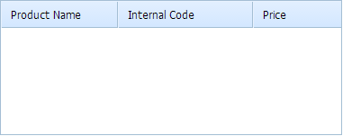

Keeping thousands of records in the grid is a common requirement for most business applications. These records can be goods, names of employees, invoices, etc.
This step-by-step tutorial will let you load 50,000 records into your grid and still have it working fast.
Firstly, let's outline a problem.
For example, you load a dataset with 10,000 records. Let's make some calculations. It takes a second to load this dataset from the server to your browser, half a second to convert it to the grid internal format, and 0.01 second to draw each row in the grid (all these figures are approximate, but you get the idea, we hope). The result of our calculation is 1+0.5+0.01*10000 = 101,5 seconds - more than a minute.
But why do you need to wait for 10,000 records to be rendered? We think that you don't! You just need the first 100 rows to start working with as this is the number of rows that is visible in the grid's frame.
So we added some ingenious code to the grid and called this new possibility "Smart Rendering", as our grid now needs to be smart enough to know which records to render and which of them should be put off.
There are 2 variants of Smart Rendering in dhtmlxGrid:
Thus, for the first variant the format of XML remains the same as in a common grid, and it generally can be a static XML file:
<rows>
<row id="xx">
<cell>
...
</cell>
</row>
</rows>
For the variant with dynamic loading it gets 2 additional parameters: total_count, pos and (as far as we should process some incoming arguments) needs to be created dynamically with some server side programming language:
<rows total_count="x" pos="y">
<row id="xx">
<cell>
...
</cell>
</row>
</rows>
Thus, this tutorial is not just about JavaScript, but also about server side a little bit. We'll show you the server-side code for PHP, JSP, ColdFusion. But let's do everything in its turn. By the way, if some of the readers can send us the necessary code for some other languages/technologies, we'll definitely put it here and will be very grateful to the author.
Once again we start with including external JavaScript and CSS files into the page.
<link rel="STYLESHEET" type="text/css" href="codebase/dhtmlx.css">
<script src="codebase/dhtmlx.js"></script>
<script>var gridQString = "";//we'll save here last url with query string we used for loading grid
//we'll use this script block for functions
//(see step 5 for details)
</script>
Depending on the data structure you'll need a grid with different columns set. In our example, we have 4 columns in the database table: unique ID (id), some name (nm), related alphanumeric code (code) and numeric value (num_val).
This is an abstract sample, but we can think about those names as the names of some pharmaceuticals. The codes will be their internal product codes, and numeric values will be the prices. So the initialization code for such kind of a grid will be as follows:
<div id="products_grid" style="width:500px;height:200px;"></div>var mygrid = new dhtmlXGridObject('products_grid');
mygrid.setImagePath("codebase/imgs/");
mygrid.setHeader("Product Name,Internal Code,Price");
mygrid.setInitWidths("*,150,150");
mygrid.setColAlign("left,left,right");
mygrid.setSkin("modern");
mygrid.init();
mygrid.enableSmartRendering(true);
As you probably remember from the previous chapter, we used body "onload" event to call grid initialization function. The above mentioned code is another case, as it calls script methods on the page, placing them after the DIV container we want to place our grid into. The goal here is the same: to call the grid constructor after the DIV container was initialized.
So what is new in this script? A new line of code was added to enable the Smart Rendering mode. As you can see, it is quite simple: just one command and you are ready to load thousands of records. It's very simple, indeed.
So here is what we have now:

As you already know from the introduction, there are two variants of Smart Rendering in dhtmlxGrid. We'll concentrate on the more complex one, which allows you working with much bigger datasets - Smart Rendering with Dynamic Loading.
Below there are samples of server side code for creating an output XML based on incoming arguments and MySQL database for 4 most popular technologies. Load your variant of file with the following command (put it into script block right after mygrid.enableSmartRendering):
gridQString = "getGridRecords.php"; // save query string to global variable (see step 5)
mygrid.load(gridQString );
By sending the request to the URL you specify in the load() method, grid adds two properties:
Thus GET request which comes to the server will look like this: getGridRecords.php?posStart=199&count=100.
<?php
//set content type and xml tag
header("Content-type:text/xml");
print("<?xml version="1.0"?>");
//define variables from incoming values
if(isset($_GET["posStart"]))
$posStart = $_GET['posStart'];
else
$posStart = 0;
if(isset($_GET["count"]))
$count = $_GET['count'];
else
$count = 100;
//connect to database
$db = new PDO("mysql:dbname=sampleDB;host=localhost","root","user","pwd");
//create query to products table
$sql = "SELECT * FROM products";
//if this is the first query - get total number of records in the query result
if($posStart==0){
$sqlCount = "Select count(*) as cnt from ($sql) as tbl";
$resCount = $db->query($sqlCount);
$rowCount = $resCount->fetch();
$totalCount = $rowCount["cnt"];
}
//add limits to query to get only rows necessary for the output
$sql.= " LIMIT ".$posStart.",".$count;
//query database to retrieve necessary block of data
$res = $db->query($sql);
//output data in XML format
print("<rows total_count='".$totalCount."' pos='".$posStart."'>");
while($row=$res->fetch()){
print("<row id='".$row['id']."'>");
print("<cell>");
print($row['nm']); //value for product name
print("</cell>");
print("<cell>");
print($row['code']); //value for internal code
print("</cell>");
print("<cell>");
print($row['num_val']); //value for price
print("</cell>");
print("</row>");
}
print("</rows>");
?>
The sample code was simplified to concentrate you on the main commands. Some necessary error handlers, etc. were omitted.
<%@ page import = "java.sql.*" %>
<%
String db_ipp_addr = "localhost";
String db_username = "root";
String db_password = "1";
String db_name = "sampleDB";
// set content type and xml tag
response.setContentType("text/xml");
out.println("<?xml version="1.0" encoding="UTF-8"?>");
// define variables from incoming values
String posStart = "";
if (request.getParameter("posStart") != null){
posStart = request.getParameter("posStart");
}else{
posStart = "0";
}
String count = "";
if (request.getParameter("count") != null){
count = request.getParameter("count");
}else{
count = "100";
}
// connect to database
Connection connection = null;
Statement statement = null;
ResultSet rs = null;
String connectionURL = "jdbc:mysql://" + db_ipp_addr + ":3306/" + db_name;
Class.forName("com.mysql.jdbc.Driver").newInstance();
connection = DriverManager.getConnection(connectionURL,db_username,db_password);
// query to products table
String sql = "SELECT * FROM products";
// if this is the first query - get total number of records in the query result
String totalCount = "";
if (posStart.equals("0")){
String sqlCount = "Select count(*) as cnt from (" + sql + ") as tbl";
statement = connection.createStatement();
rs = statement.executeQuery(sqlCount);
rs.next();
totalCount = rs.getString("cnt");
rs.close();
} else {
totalCount = "";
}
// add limits to query to get only rows necessary for output
sql += " LIMIT " + posStart + "," + count;
// Execute the query
statement = connection.createStatement();
rs = statement.executeQuery(sql);
// output data in XML format
out.println("<rows total_count='" + totalCount + "' pos='" + posStart + "'>");
while (rs.next()) {
out.println("<row id='" + rs.getString("id") + "'>");
out.println("<cell>");
out.println(rs.getString("nm")); // value for product name
out.println("</cell>");
out.println("<cell>");
out.println(rs.getString("code")); // value for internal code
out.println("</cell>");
out.println("<cell>");
out.println(rs.getString("num_val")); // value for price
out.println("</cell>");
out.println("</row>");
}
out.write("</rows>");
rs.close();
%>
<%@ LANGUAGE = VBScript %>
<% option explicit %>
<%
Dim db_ipp_addr, db_username, db_password, db_name
db_ipp_addr = "localhost"
db_username = "root"
db_password = "1"
db_name = "sampleDB"
' set content type and xml tag
Response.ContentType = "text/xml"
Response.write("<?xml version=""1.0"" encoding=""UTF-8""?>")
' define variables from incoming values
Dim posStart, count
If not isEmpty(Request.QueryString("posStart")) Then
posStart = Request.QueryString("posStart")
Else
posStart = 0
End If
If not isEmpty(Request.QueryString("count")) Then
count = Request.QueryString("count")
Else
count = 100
End If
' connect to database
Dim objConnection, rs, connString, sql
Set objConnection = Server.CreateObject("ADODB.Connection")
Set rs = Server.CreateObject("ADODB.Recordset")
connString = "DRIVERMySQL ODBC 3.51 Driver};
SERVER=" & db_ipp_addr & ";
DATABASE=" & db_name & ";
UID=" & db_username & ";
PWD=" & db_password
objConnection.Open connString
' query to products table
sql = "SELECT * FROM products"
' if this is the first query - get total number of records in the query result
Dim sqlCount, totalCount
If posStart = 0 Then
sqlCount = "Select count(*) as cnt from (" & sql & ") as tbl"
rs.Open sqlCount, objConnection
totalCount = rs("cnt")
rs.Close
Else
totalCount = ""
End If
' add limits to query to get only rows necessary for output
sql = sql & " LIMIT " & posStart & "," & count
' Execute the query
rs.Open sql, objConnection
' output data in XML format
Response.write("<rows total_count='" & totalCount & "'
pos='" & posStart & "'>")
Do while not rs.EOF
Response.write("<row id='" & rs("id") & "'>")
Response.write("<cell>")
Response.write(rs("nm")) ' value for product name
Response.write("</cell>")
Response.write("<cell>")
Response.write(rs("code")) ' value for internal code
Response.write("</cell>")
Response.write("<cell>")
Response.write(rs("num_val")) ' value for price
Response.write("</cell>")
Response.write("</row>")
rs.MoveNext
Loop
Response.write("</rows>")
rs.Close
Set rs = Nothing
objConnection.Close
Set objConnection = Nothing
%>
<cfset dsn = "sampleDB">
<cfsetting enablecfoutputonly="yes">
<!--- set content type and xml tag --->
<cfcontent reset="yes" type="text/xml; charset=UTF-8">
<cfoutput><?xml version="1.0"?></cfoutput>
<!--- define variables from incoming values --->
<cfif isDefined("url.posStart")>
<cfset posStart = url.posStart>
<cfelse>
<cfset posStart = 0>
</cfif>
<cfif isDefined("url.count")>
<cfset count = url.count>
<cfelse>
<cfset count = 100>
</cfif>
<!--- if it's the first query, get total number of records in the query result --->
<cfif posStart eq 0>
<cfquery datasource="#dsn#" name="getCount">
Select count(*) as cnt
FROM products
</cfquery>
<cfset totalCount = getCount.cnt>
<cfelse>
<Cfset totalCount = "">
</cfif>
<!--- query to products table --->
<cfquery datasource="#dsn#" name="getRecords">
SELECT *
FROM products
<!--- add limits to query to get only rows necessary for output --->
LIMIT #posStart#, #count#
</cfquery>
<!--- output data in XML format --->
<cfoutput><rows total_count="#totalCount#" pos="#posStart#"></cfoutput>
<cfloop query="getRecords">
<cfoutput><row id="#getRecords.id#"></cfoutput>
<!--- value for product name --->
<cfoutput><cell>#getRecords.nm#</cell></cfoutput>
<!--- value for internal code --->
<cfoutput><cell>#getRecords.code#</cell></cfoutput>
<!--- value for price --->
<cfoutput><cell>#getRecords.num_val#</cell></cfoutput>
<cfoutput></row></cfoutput>
</cfloop>
<cfoutput></rows></cfoutput>
After loading the file the grid will look like in the picture below. When you stop scrolling, the grid will load and render a new portion of records.
Why do you think you need additional parameters and why are we talking about them together with Smart Rendering? There are two possible situations:
Let's add the possibility to filter grid data by the product name mask. Put the following code right before the DIV container we've used for grid initialization:
<input type="Text" id="nm_mask">
<input type="Button" value="Filter" onclick="applyFilter()">
As you see, by clicking the "Filter" button we call the applyFilter function, which doesn't exist as we haven't created it yet.
Let's do it now. It will contain the magic of getting the content for grid based on additional parameter.
function applyFilter(){
mygrid.clearAll(); //remove all data
//save query string in global variable (see step 5 for details)
gridQString = "getGridRecords.php?name_mask="
+document.getElementById("nm_mask").value;
mygrid.load(gridQString); // load new dataset from sever with additional param
}
Put it into the script block we left for functions (or any other - it doesn't matter). Now the getGridRecords file gets an additional parameter named "name_mask", which you can add to the query to filter the results by name. For example (PHP):
//query to products table
$sql = "SELECT * FROM products";
if(isset($_GET["name_mask"]))
$sql.=" Where nm like '".$_GET["name_mask"]."%'";
When we have 50,000 records in the grid or just going to have but do not really have (as we work with Smart Rendering with Dynamic Loading) the client-side sorting will not help a lot. Our grid just doesn't know all the values yet. So we need to move sorting to the server side. It is really simple.
There will be 3 stages of the plan:
To cancel the client-side sorting we need to enable sorting for the columns first. As it was described in the previous tutorial, you can do this with the setColSorting method, but the sorting type for all the three columns will be "server":
mygrid.setColSorting("server,server,server");
The "server" sorting type means nothing for the sorting routine of the grid, so it'll just ignore it.
This information is mostly needed for us, as column sorting was moved to the server side. Put this command somewhere before mygrid.init().
Now we are ready to execute the stages 1 and 2 of the plan. We'll do this with the onBeforeSorting event handler. Firstly, let's define the handler function, it gets 3 incoming arguments:
And this function will work IN PROFESSIONAL EDITION of the grid only. Sorry, from now on only those who "got the tickets" go further... OK, if you are still reading, here is the complete code for the event handler function. Put it into the script block we've left for functions (or in some other one):
function sortGridOnServer(ind,gridObj,direct){
mygrid.clearAll();
mygrid.load(gridQString+(gridQString.indexOf("?")>=0?"&":"?")
+"orderby="+ind+"&direct="+direct);
mygrid.setSortImgState(true,ind,direct);
return false;
}
The above mentioned code does the following:
Now when we have the sortGridOnServer function, we can add the following command to set the event handler to the grid initialization script:
mygrid.attachEvent("onBeforeSorting",sortGridOnServer);
The server-side changes are simple, as we just add the Order by statement to the field in the table that corresponds to a column of the grid, and set the direction: ASC if asc, DESC if des. Here is a code sample for PHP:
//order by
$columns = array("nm","code","num_val");
if(isset($_GET["orderby"])){
if($_GET["direct"]=='des')
$direct = "DESC";
else
$direct = "ASC";
$sql.=" Order by ".$columns[$_GET["orderby"]]." ".$direct;
}